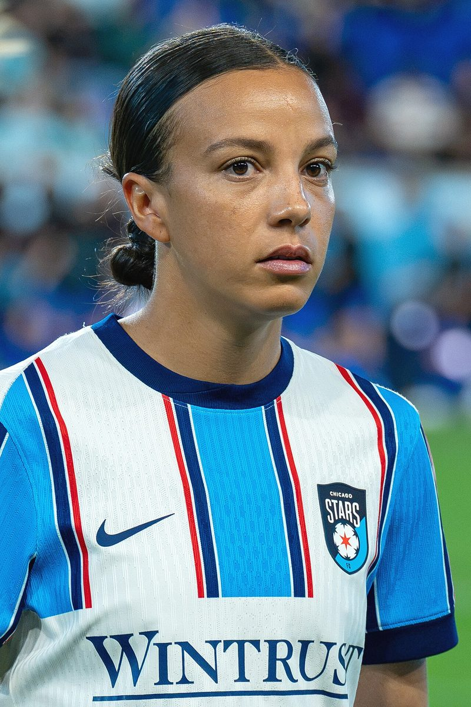

桑切斯7分钟戴帽，美国女足8比0狂胜萨尔瓦多锁定2027世界杯门票
在得州进行的中北美及加勒比女足锦标赛1/4决赛中，桑切斯7分钟内连入三球，美国队半场便建立起7球优势。

11月27日周五晚，在得克萨斯州曼斯菲尔德的得州健康曼斯菲尔德体育场（Texas Health Mansfield Stadium），美国女足在中北美及加勒比海女足锦标赛（Concacaf W Championship）四分之一决赛中以8比0横扫萨尔瓦多女足，强势晋级2027年巴西女足世界杯正赛。阿什莉·桑切斯（Ashley Sanchez）更是在短短7分钟内上演了惊艳的帽子戏法。
半场狂轰七球奠定胜局
比赛开局阶段美国队就展现出绝对统治力。第9分钟，肯尼迪·韦斯利（Kennedy Wesley）率先打破僵局。第31分钟，蒂尔娜·戴维森（Tierna Davidson）头球顶进马洛丽·斯旺森（Mallory Swanson）开出的任意球扩大比分，斯旺森紧接着不久后攻入全队第三球。随后比赛彻底进入了桑切斯的时间：她在第36、第39和第43分钟势如破竹连入三元；上半场伤停补时前的第45分钟，索菲亚·威尔逊（Sophia Wilson）再下一城，将比分改写为7比0。下半场第80分钟，替补登场的克鲁瓦·贝瑟恩（Croix Bethune）接到林赛·霍兰（Lindsey Horan）的助攻推射入网，将最终比分定格在8比0。

据美联社报道，两队之间的实力差距十分悬殊——美国女足目前高居世界第2位，而埃里克·阿库尼亚（Eric Acuña）执教的萨尔瓦多女足仅排名世界第78位。
状态火热的桑切斯
桑切斯此役的状态火热绝非偶然。美联社指出，在此前的俱乐部赛季中，她效力于北卡罗来纳勇气队，单赛季轰入20球一举斩获国家女子足球联赛（NWSL）金靴奖。“我觉得自己在俱乐部的表现是一项极大的成就，我只是努力把这种势头延续到国家队来，”桑切斯赛后表示。
主教练埃玛·海斯（Emma Hayes）对球队的前45分钟表现感到满意：“我认为全队在上半场发挥得非常出色。”本场比赛由克劳迪娅·迪基（Claudia Dickey）出任首发门将，而特里妮蒂·罗德曼（Trinity Rodman）因轻微肩伤缺阵，杰登·肖（Jaedyn Shaw）入替进入大名单。

半决赛将战牙买加
晋级之后，美国队将在半决赛迎战牙买加女足。同样是在周五早些时候，牙买加队在同一座球场以3比0击败哥斯达黎加，同样锁定了2027年女足世界杯席位。对于斯旺森来说，球队接下来的目标直指锦标赛冠军：“现在我们有了新的争夺目标，这是一项锦标赛，我们将全力以赴去冲击奖杯。”